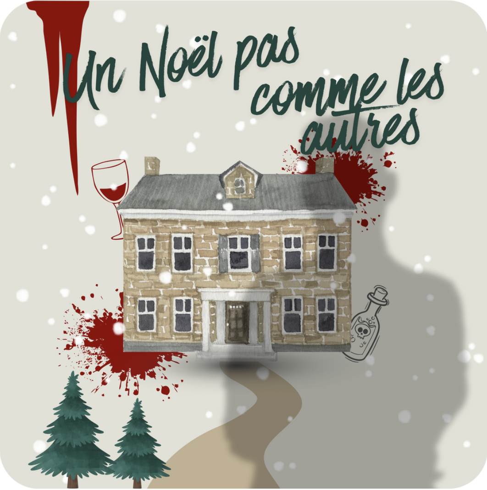
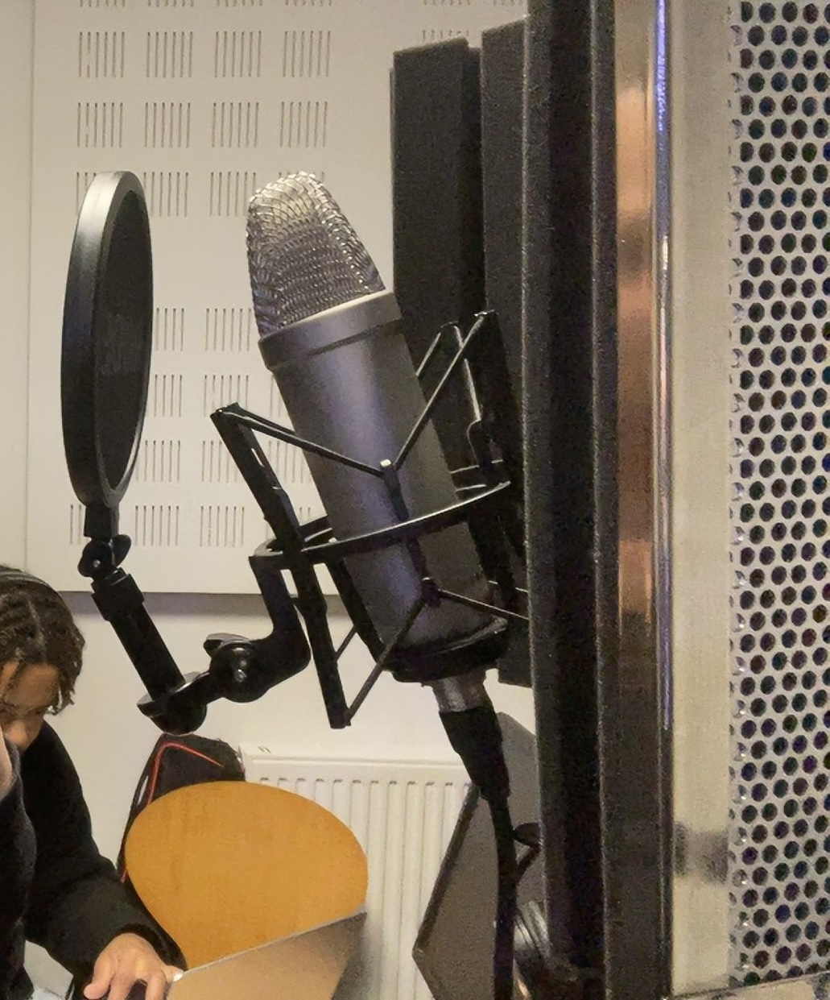

Réalisation d'un podcast
Scénario, réalisation, montage
Présentation du projet
Ce projet consistait en la réalisation d’un podcast audio sous la forme d’une mini-enquête. L’histoire se déroule lors du soir de Noël,
dans un cadre familial, et repose sur une narration sonore immersive. L’objectif principal du projet était de créer une ambiance crédible
et prenante uniquement à travers le son.
La réalisation s’est concentrée sur le travail audio : prise de voix, gestion des ambiances, effets sonores et montage. L’absence d’image impose une attention
particulière à la clarté des dialogues, au rythme du montage et à la spatialisation des sons afin de guider l’auditeur et de maintenir la compréhension du récit.
Ce que j’ai fait
- Mise en place du concept, de la direction du projet
- Écriture de scénario
- Préparation technique des enregistrements
- Prises de sons
- Intégration des ambiances sonores
- Dérushage
- Montage audio (audacity)

